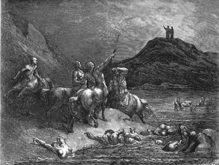

Canto XII
Minotauro - Centauros
Círculo da violência (7) - Rio de sangue
Descemos por uma rampa formada
por um enorme deslizamento de pedras, causado provavelmente por um terremoto
ou pela contínua erosão. O barranco derrubado esculpia vários caminhos
íngremes e irregulares da beira do precipício até embaixo, permitindo
a descida com dificuldade. Quando descíamos por esse caminho tortuoso,
encontramos, na beira do barranco destruído, o Minotauro
de Creta. O touro ficou tão enfurecido quando nos viu que mordeu suas
próprias mãos de raiva. Mas Virgílio logo o afastou, gritando:
- Pensas talvez que estás vendo o duque de Atenas, que no mundo te trouxe
a morte? Vai embora, besta, que este só vem aqui para conhecer vossas
penas!
Tentando escapar, assustado com aquela voz revestida de autoridade, o
Minotauro começou a bufar e espernear, escoiceando como se tivesse sido
ferido. O mestre, alerta, gritou:
- Vamos andando! Rápido! Vamos aproveitar para escapar enquanto ele se
consome em sua fúria.
Seguimos então pelas pedras, que eu freqüentemente sentia balançarem
sob os meus pés. Eu pensava sobre as ruínas quando o mestre falou:
- Imagino que pensas sobre estas ruínas, guardadas por aquela fera semi-humana.
Quero que saibas que, quando aqui estive da última vez, esta avalanche
ainda não havia acontecido. Se eu bem lembro, ela ocorreu pouco antes
da descida Daquele que veio ao inferno para levar os justos para o céu.
Na ocasião, todo este abismo tremeu. Não só aqui houve destruição, mas
também em outras partes. Mas olha lá para baixo que em breve avistarás
o rio de sangue fervendo as almas dos violentos contra seus semelhantes.
De lá do alto vi uma larga fossa, curva como um arco, assim como o mestre
me descrevera, que se estendia por todo o plano abaixo. Na base do penhasco
apareceu uma ala de centauros, armados
com flechas. Quando nos viram, três deles se afastaram do grupo e vieram
na nossa direção, armados, com as flechas esticadas, prontas para atirar.
Um deles então gritou:
- Vocês aí! O que querem? Que tortura procuram? Falem logo ou eu atiro!
- Nossa resposta daremos somente a Quirón,
teu chefe! - gritou o mestre de volta. - Só com ele falaremos pois tu
estás demasiado nervoso. - Depois ele voltou-se para mim e disse - Aquele
ali é Nesso, que morreu pela bela Dejanira,
e fez do seu sangue sua própria vingança. O do meio, que contempla seu
peito, é o grande Quirón, que educou Aquiles; o último é Fólo, aquele
que nos ameaçou cheio de ira.
Quando estávamos diante dos centauros, ouvimos Quirón falar aos outros
dois:
- Vocês perceberam que aquele que está atrás move tudo o que toca? Isto
não é o que fazem normalmente os pés de um morto!
O mestre, que já estava diante do centauro e ouvira o final da conversa
logo lhe esclareceu:
- Ele está, de fato, vivo, e eu fui designado para guiá-lo por este caminho.
Ele faz esta viagem por necessidade e não por prazer. Ele não é ladrão
nem eu alma criminosa. - e pediu - Dá-me para nos guiar um do teu povo,
para que nos leve à passagem onde o rio fica raso e possa levar este nas
costas, pois ele não é espírito que voa.
|  |
| Centauros aguardam Dante e Virgílio diante do
rio de sangue fervente onde sofrem os culpados de violência
contra o próximo (assaltantes, assassinos e tiranos). Ilustração
de Gustave Doré (séc XIX). |
Quirón, então, voltou-se para Nesso e ordenou-lhe que nos mostrasse o
caminho. Partimos com a fiel escolta, margeando o rio de sangue, onde
almas ferviam e gritavam de dor. Lá eu vi almas submersas até os olhos.
- Esses que tu vês mergulhados até os olhos - explicou o centauro -,
são os tiranos que tiraram o sangue e os bens de suas vítimas. Aqui choram
por seus feitos desumanos Alexandre e
Dionísio, que fez a Sicília sofrer durante
anos. Aquele de cabelos negros é Azzolino
e o outro, louro, é Obizzo d'Este.
Pouco adiante, parou outra vez o centauro, e mostrou-nos alguns que ficavam
submersos no sangue até a garganta.
- Eis aquele que assassinou, durante
a missa, aquele outro cujo coração ainda sangra sobre o Tâmisa - indicou
Nesso.
Mais adiante, eu mesmo pude reconhecer alguns dos réus cujo peito já
emergia. À medida em que caminhávamos o nível do sangue ia baixando até
que enfim só ardia a sola dos pés. Lá finalmente encontramos um trecho
raso por onde podíamos atravessar.
- Assim como vês o rio fervente aqui, deste lado, ficando cada vez mais
raso - disse o centauro -, do outro lado ele se torna cada vez mais fundo,
até chegar ao ponto de maior profundidade que é onde sofrem os tiranos.
É lá que a divina justiça atinge Átila,
que foi um flagelo na terra, e Pirro
e Sexto; e para sempre espreme as lágrimas
que o sangue escaldante produz de Rinier
da Cornetto e Rinier Pazzo, que transformaram as estradas em campo
de guerra.
Chegando a outra margem, descemos da garupa de Nesso. Ele então, atravessou
o rio novamente e se foi.
|